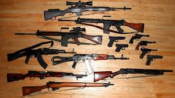

Las ventas de armamento español a Arabia Saudí han batido un récord histórico, al sumar 447,6 millones de euros en el primer semestre de 2015, ha informado este lunes la Cadena SER. Esta cifra supone el 26% de todo el material de defensa exportado por España en dicho periodo, que asciende a 1.727,2 millones de euros, un 25,3% más que en los seis primeros meses de 2014, según el informe elaborado por la Secretaría de Estado de Comercio.
La práctica totalidad de lo exportado a Riad correspondió a dos aviones de reabastecimiento en vuelo MRTT, fabricados por Airbus en su factoría de Getafe a partir del A330-200, aunque también se vendieron repuestos para aviones de transporte, piezas de motores para cazas de combate, munición ligera y una estación de control remoto para armas.
Las estadísticas oficiales también incluyen la venta de munición de artillería y bombas por 37,5 millones de euros a las Fuerzas Armadas de Irak, a las que están instruyendo 300 militares españoles; así como la exportación de cuatro aviones de transporte, repuestos y motores a Egipto por 100 millones; o de 13,1 millones a Venezuela por un sistema de artillería naval y otros equipos para la marina.